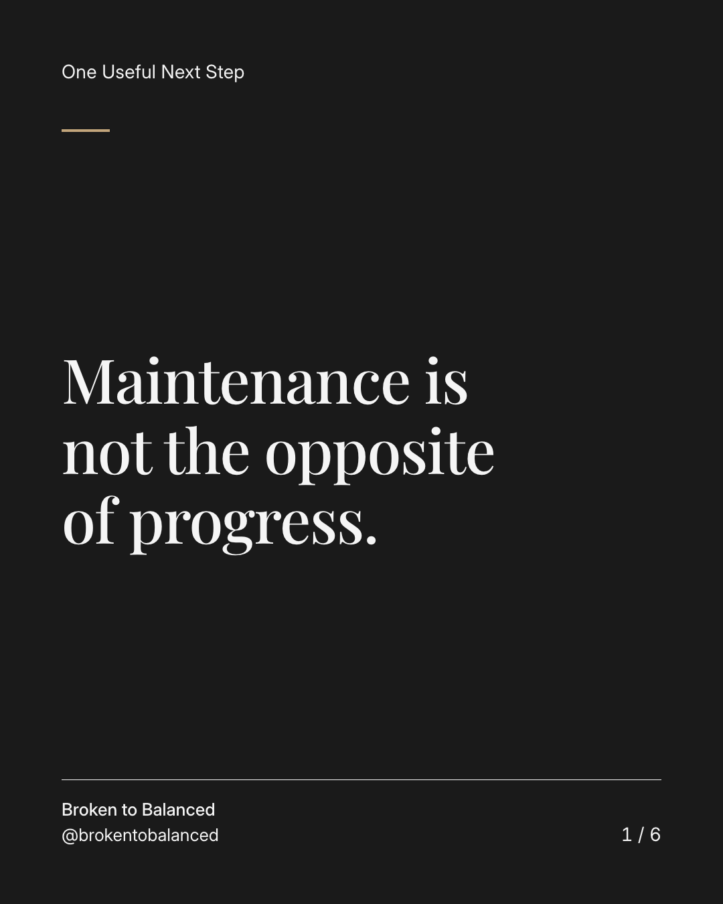
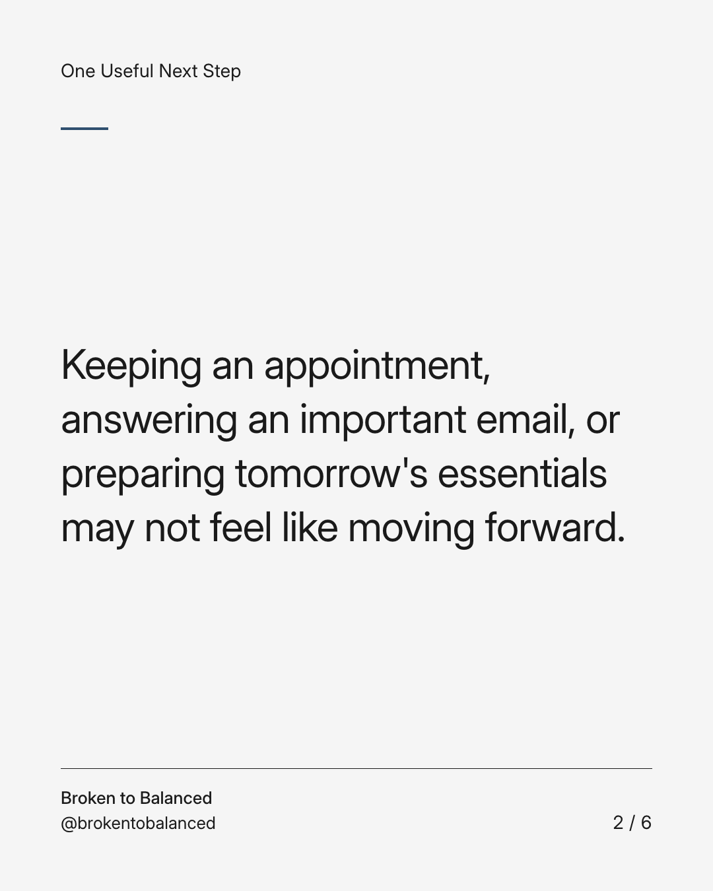
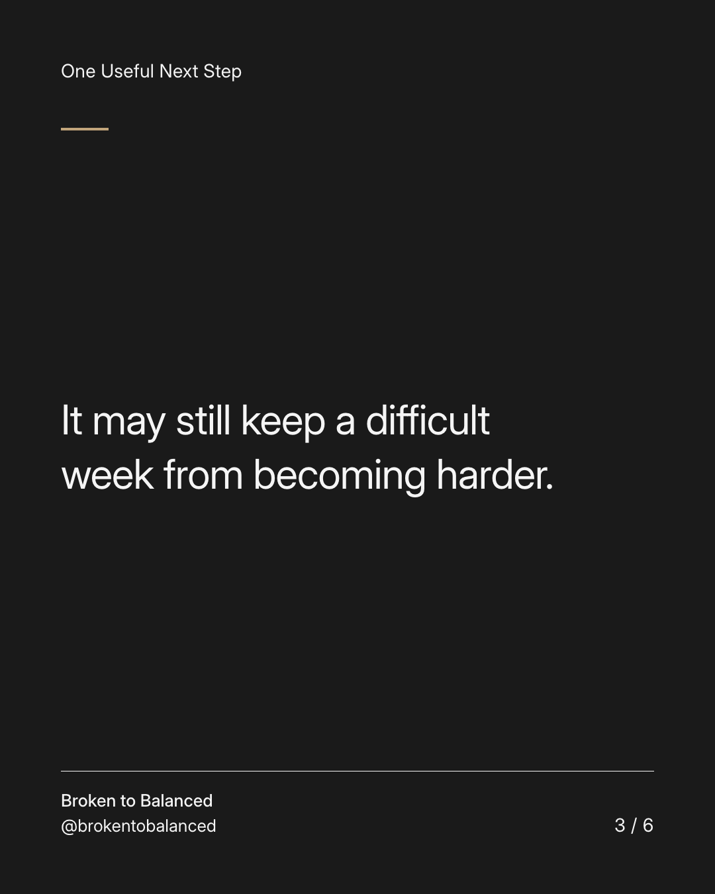
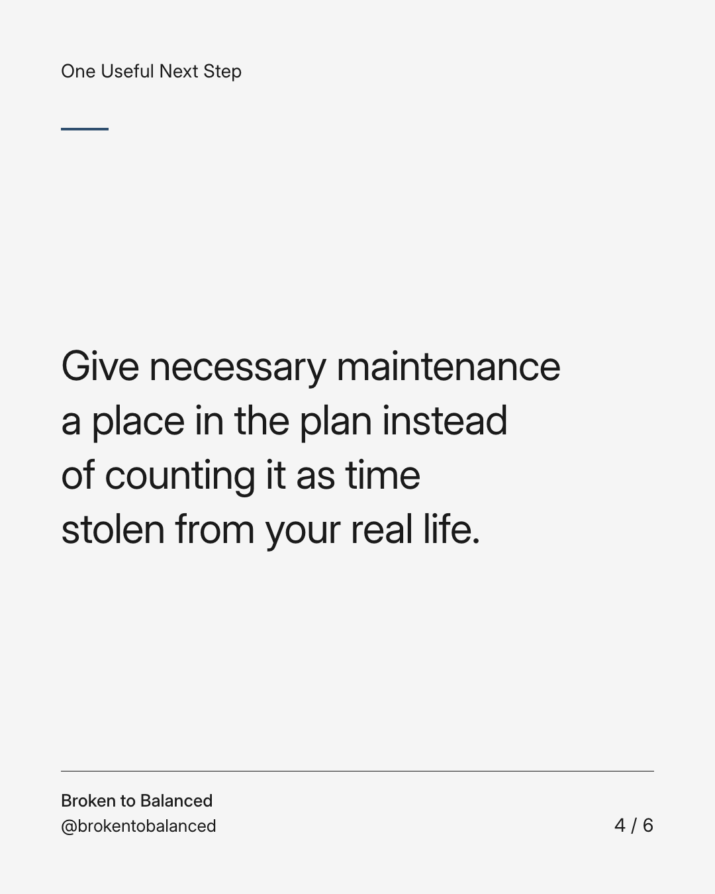
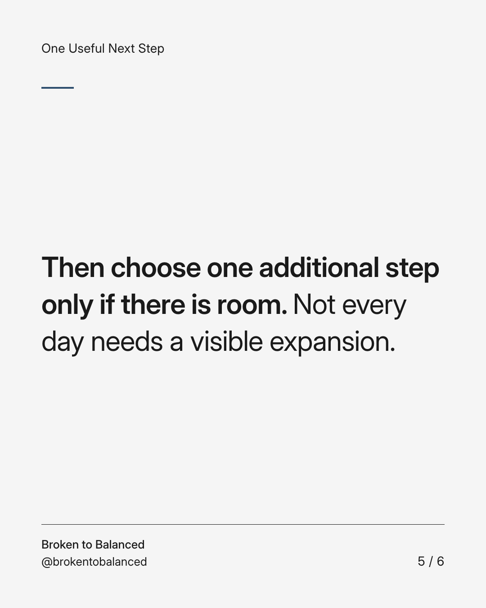
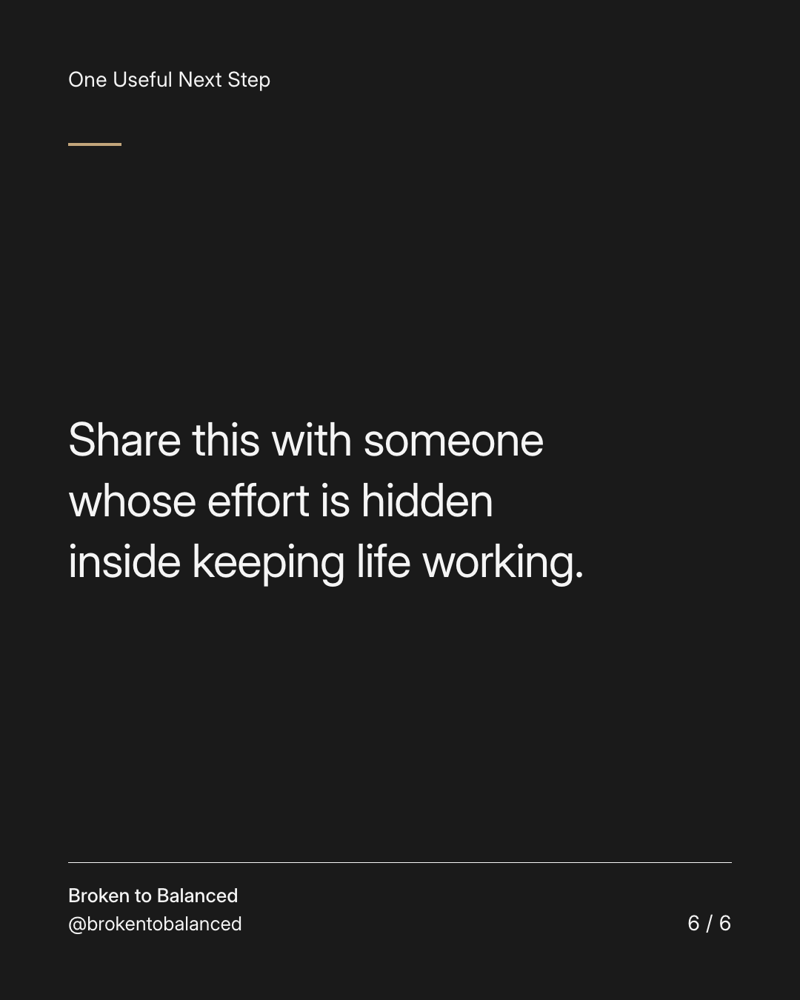

Exact text and accessibility text
Maintenance is not the opposite of progress.
Slide 1 of 6. Maintenance is not the opposite of progress.


Exact text and accessibility text
Keeping an appointment, answering an important email, or preparing tomorrow's essentials may not feel like moving forward.
Slide 2 of 6. Keeping an appointment, answering an important email, or preparing tomorrow's essentials may not feel like moving forward.


Exact text and accessibility text
It may still keep a difficult week from becoming harder.
Slide 3 of 6. It may still keep a difficult week from becoming harder.


Exact text and accessibility text
Give necessary maintenance a place in the plan instead of counting it as time stolen from your real life.
Slide 4 of 6. Give necessary maintenance a place in the plan instead of counting it as time stolen from your real life.


Exact text and accessibility text
Then choose one additional step only if there is room. Not every day needs a visible expansion.
Slide 5 of 6. Then choose one additional step only if there is room. Not every day needs a visible expansion.


Exact text and accessibility text
Share this with someone whose effort is hidden inside keeping life working.
Slide 6 of 6. Share this with someone whose effort is hidden inside keeping life working.
Exact caption
Plain-text fallback: select and copy the caption.